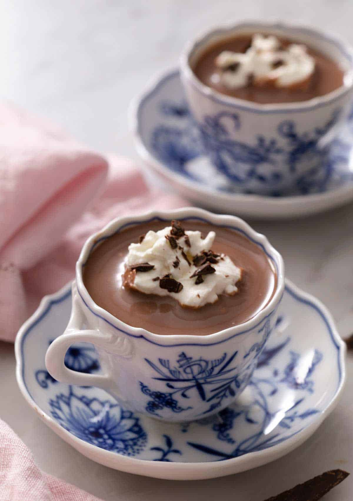

Hot Chocolate

The inspiration for this here recipe came from a well timed Google alert that popped up
as I was about to start making this page.
With that being said, I actually really love John Kanell of Preppy Kitchen, whose recipe I stole here,
so I'm sure that this hot chocolate will actually be bomb.
Please click here if you would like to visit
Preppy Kitchen's far more attractive website to read this recipe.
Anyway, let's make some hot chocolate:
Ingredients
- 3 cups whole milk (700mL)
- 3 tbsp unsweetened cocoa powder
- 1/4 cup granulated sugar (50g)
- 1 cup semisweet chocolate chopped or chips (40z/113g)
- 1/2 teaspoon vanilla extract (2.5ml)
Directions
-
First, roughly chop the chocolate into small pieces or use chocolate chips.
-
Combine milk, and sugar in a small saucepan and place over medium heat. Whisk together and warm while whisking frequently.
-
Add the cocoa powder in and whisk together over heat until hot but not boiling.
-
Add the chopped chocolate and whisk until all the pieces have melted and the mixture is smooth.
Remove from heat and stir in the vanilla. Serve with whipped cream.